Pintura, desenho e escultura
Enquadrar o ordinário, revelar o extraordinário.
Na minha escola, adolescentes e adultos aprendem a educar o olhar. Ensino artes visuais com técnica, paciência e acolhimento, acompanhando cada aluno de perto.
Ver horários e agendarElegância que acolhe.
Tradição que transforma.
Técnica que liberta.
Sobre a escola
Para mim, a arte não copia o mundo inteiro: ela escolhe, enquadra e revela. Como o artista que separa um fragmento da realidade e o eleva ao extraordinário, a minha escola educa o olhar para transformar o ordinário em beleza.
Ensino com técnica e paciência, em turmas pequenas, respeitando o ritmo de cada aluno e cuidando de cada detalhe, do primeiro traço à obra concluída.
Meus trabalhos
Uma pequena amostra do que eu crio e do que ensino.
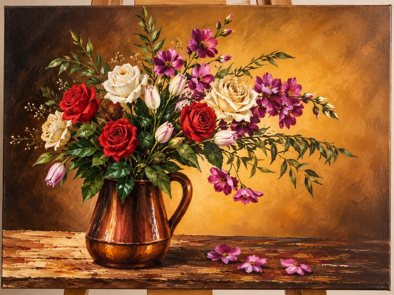
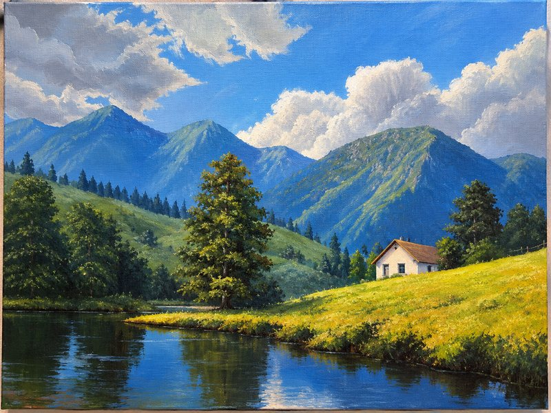
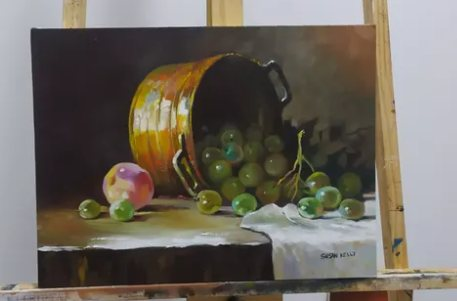
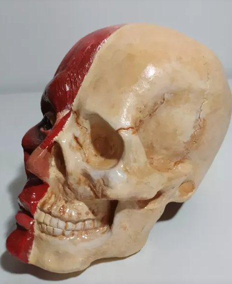
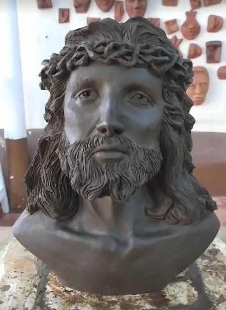
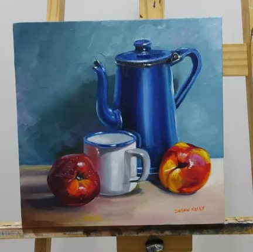
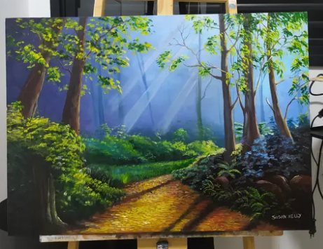
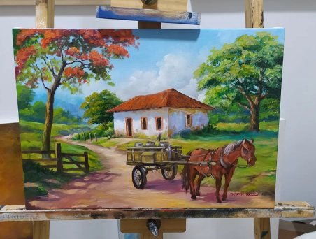
Cursos e turmas
Pintura, desenho e escultura, para quem está começando e para quem quer ir além.
-
Pintura para iniciantes
Com tinta acrílica e aquarela, você aprende desde os fundamentos de cor e composição até as primeiras telas completas. Não precisa ter experiência.
Adolescentes e adultos -
Desenho de observação
Desenho a lápis e nanquim a partir de referências reais (objetos, retrato e paisagem), com foco em proporção, luz e sombra.
Adolescentes e adultos -
Escultura
Modelagem em argila para trabalhar forma, volume e proporção, do estudo à peça concluída.
Adolescentes e adultos -
Ateliê livre
Para quem já tem alguma prática e quer desenvolver um projeto próprio, com o meu acompanhamento nos momentos em que precisar.
Nível intermediário
O que os alunos estão fazendo
Trabalhos feitos nas aulas, do primeiro esboço à tela terminada.
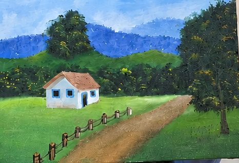
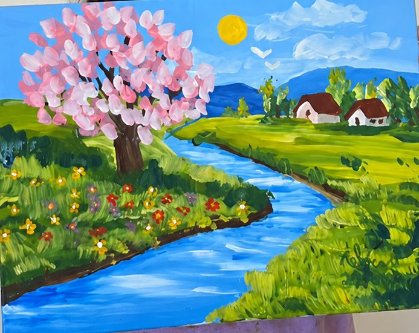
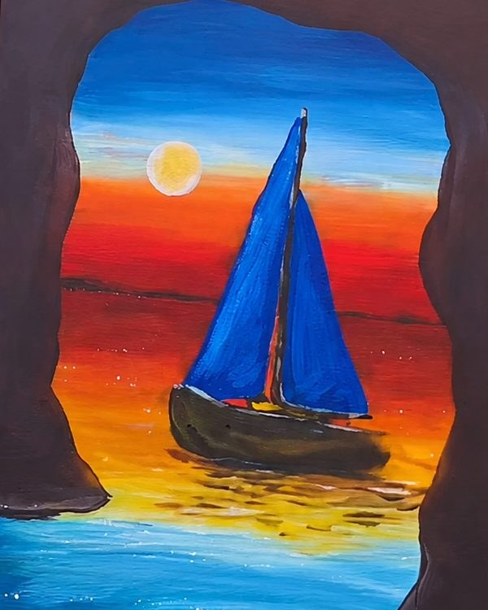
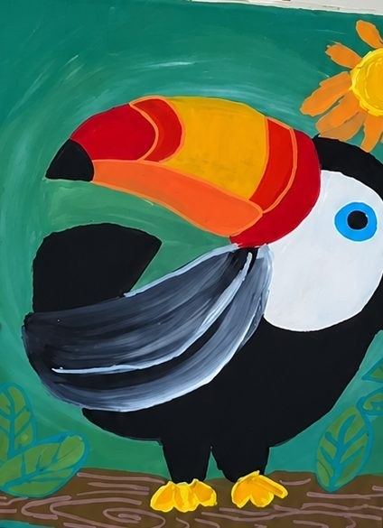
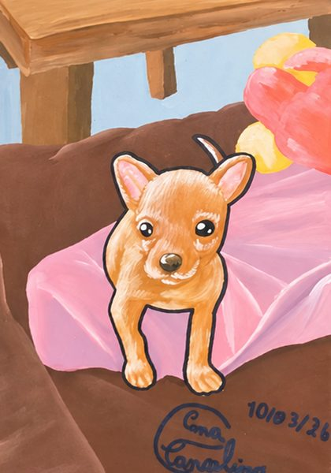
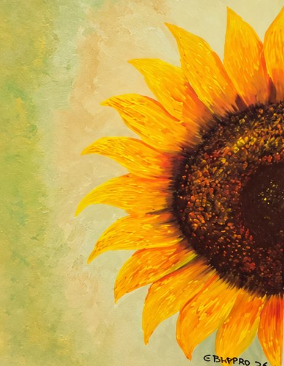
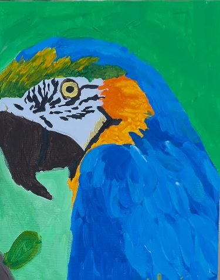
Agende sua aula
Escolha um horário disponível na agenda abaixo. Assim que você reservar, recebe a confirmação por e-mail.
Confirmar pelo WhatsApp (opcional)